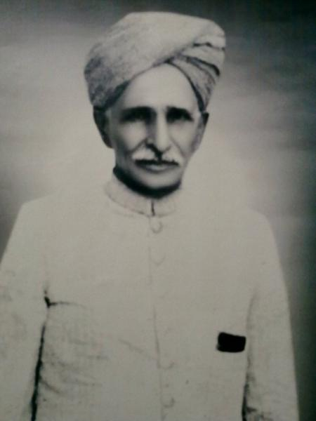
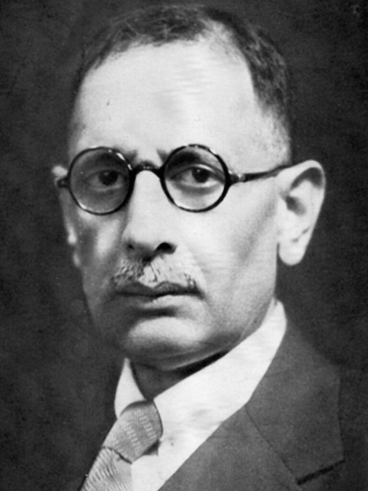
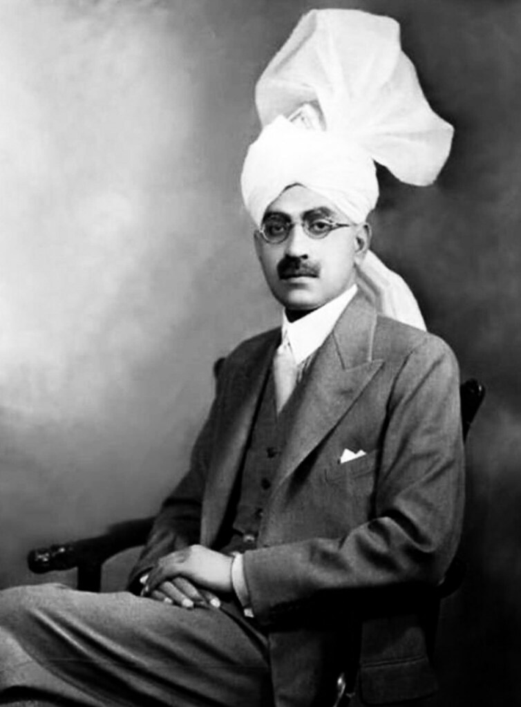
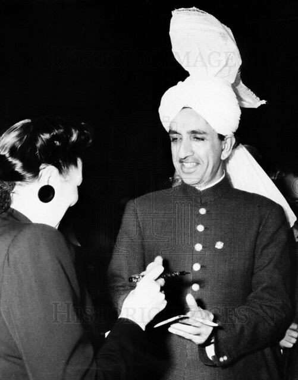

Learn about the secular agrarian force that shaped pre-partition Punjab.
The Punjab Unionist Party was a powerful coalition of Muslim, Hindu, and Sikh leaders who fought for agrarian reform, communal harmony, and provincial unity in British India. Founded in the 1920s, it resisted divisive politics and became a voice for rural Punjab.

Champion of rural justice, Chotu Ram worked tirelessly for agrarian reform and the upliftment of farmers.

A visionary founder of the Unionist Party, advocating for education, land rights, and cross-communal cooperation.

As Premier, he kept Punjab unified and stable in the face of growing communal pressures.

The last Premier of undivided Punjab, Khizar stood firm against partition and sectarian politics.
Unionist Party formed by Fazl-e-Hussain to represent agrarian Punjab across communities.
Unionists win elections under Sikandar Hayat Khan, forming government in Punjab.
Sikandar Hayat passes away. Khizar Tiwana becomes Premier and resists partition.
Under intense communal pressure, the party disbands. Its secular legacy lives on in memory.